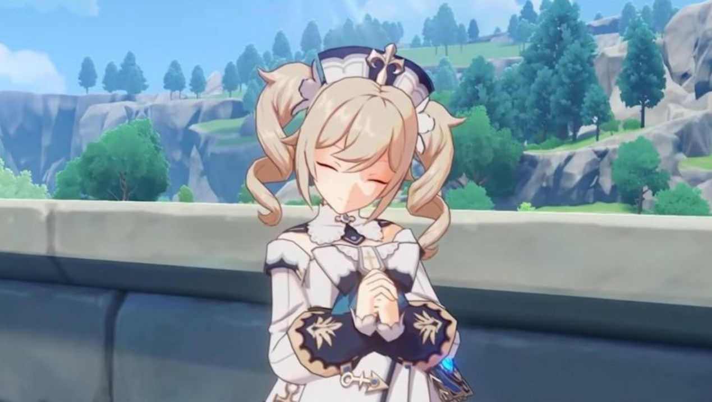
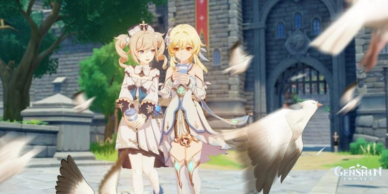
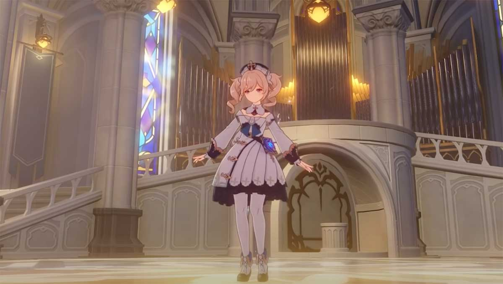
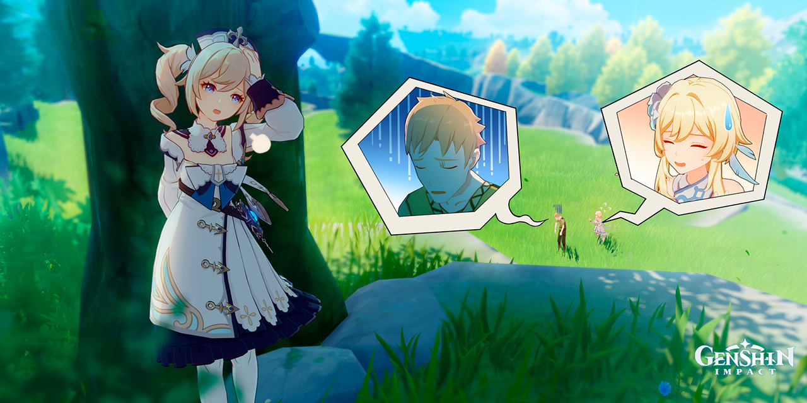
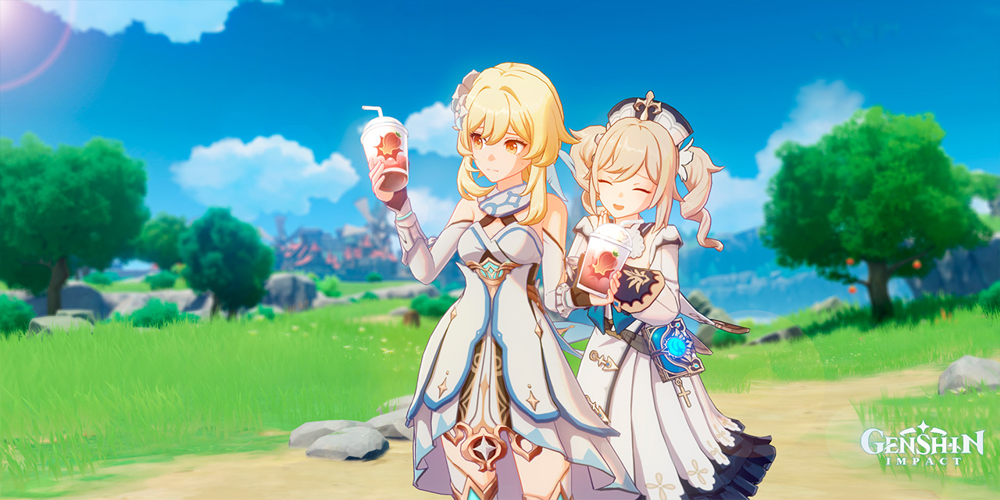
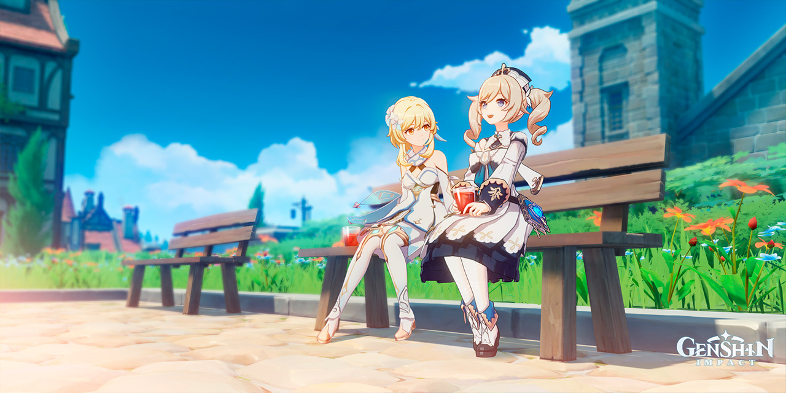

| "Таланты" | ||
| Тип | Название | Описание |
|---|---|---|
| Боевой навык - Обычная/Заряженная атака | Шёпот воды | Обычная атака: До четырёх ударов пузырями, наносящих Гидро урон Заряженная атака: Короткое заклинание, наносящееГидро урон по площади, на которое тратится определённое количество выносливости. Атака в падении: Накопив энергию воды, стремительно падает на землю, атакуя всех врагов на пути. Приземлившись, наносит Гидро урон по площади. |
| Боевой навык - Элементальный навык | Да начнётся шоу♪ | Создаёт водяные пузыри в форме музыкальных нот, которые складываются в кольцо и наносят Гидро урон окружающим врагам, а также накладывают на них статус Мокрый.
Кольцо мелодии: •Обычные атаки Барбары восстанавливают всем членам отряда и ближайшим союзникам определённое количество HP которое зависит от макс. HP Барбары; •Заряженная атака восстанавливает в 4 раза больше HP; •Регулярно восстанавливает определённое количество HP активному персонажу; •При касании с союзниками и врагами накладывает на них статус Мокрый |
| Боевой навык - Взрыв стихии | Чудесное сияние♪ | Восстанавливает всем членам отряда определённое количество HP, которое зависит от макс. HP Барбары. |
| Пассивный талант 1 | Урожайный сезон | Уменьшает потребление выносливости персонажей в Кольце мелодии навыка Да начнётся шоу♪ на 12%. |
| Пассивный талант 2 | На бис | Подобранные вашими персонажами элементальные сферы и частицы увеличивают длительность Кольца мелодии навыка Да начнётся шоу♪ на 1 сек. Нельзя увеличить больше, чем на 5 сек. |
| Пассивный талант 3 | Со всей душой♪ | При приготовлении идеального блюда c восстанавливающими свойствами имеет 12% шанс приготовить дополнительное блюдо. |
| "Галерея" | |
|  |  |
|  |  |
|  |  |